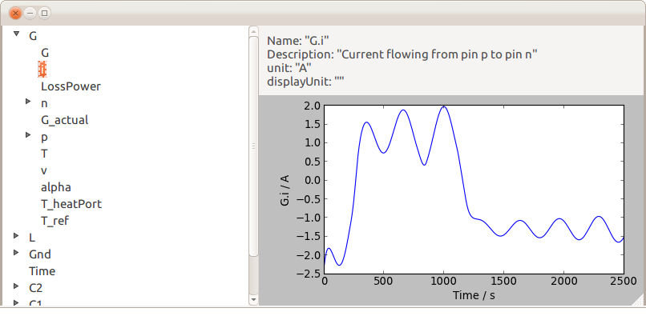
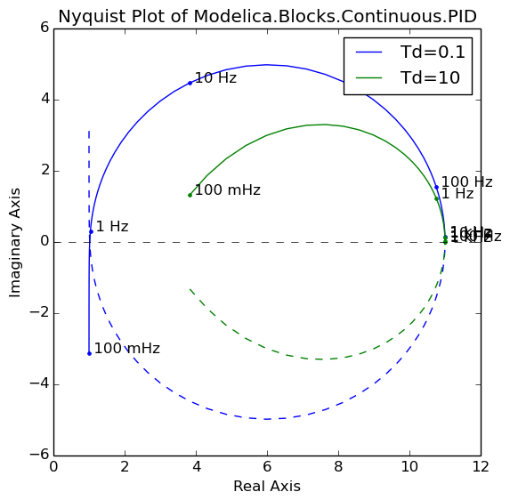

Python utilities to set up and analyze Modelica simulation experiments
ModelicaRes is a free, open-source tool to manage Modelica simulations, interpret results, and create publishable figures. It is currently possible to
The figures are generated via matplotlib, which offers a rich set of plotting routines. ModelicaRes includes convenient functions to automatically pre-format and label some figures, like xy plots, Bode and Nyquist plots, and Sankey diagrams. ModelicaRes can be scripted or run from a Python interpreter with math and matrix functions from NumPy.
 The links below and in the sidebar describe the components of ModelicaRes. For an introduction see loadres, which loads data files and provides a Python interpreter to help analyze them.
The top-level module, modelicares, provides direct access to the most important classes and functions. Others must be accessed through their submodules. The loadres script The modelicares.simres submodule has classes to load, analyze, and plot simulation results. The modelicares.linres submodule has a class to load, analyze, and plot results from linearizing a model. The modelicares.multi submodule has functions to load and plot results from multiple data files at once. The modelicares.exps submodule has tools to set up and manage simulation experiments. The modelicares.texunit submodule has functions to translate Modelica unit and displayUnit strings into LaTeX-formatted strings. The last submodule, modelicares.base, has general supporting functions.
A PDF version of this documentation is available here.
Installation
An installable copy of this package can be downloaded from the main site or the PyPI page. After extracting the package, run the set-up script (setup.py) from the base folder. On Windows, use the following command:
python setup.py install
On Linux, use:
sudo python setup.py install
The matplotlibrc file in the base folder has some recommended revisions to matplotlib‘s defaults. To use it, copy or move the file to the working directory or matplotlib‘s configuration directory. See http://matplotlib.org/users/customizing.html for details.
Credits
The main author is Kevin Davies. Kevin Bandy also helped in the development. Third-party code has been included from Jason Grout (ArrowLine class), Jason Heeris (efficient base-10 logarithm), Richard Murray (python-control), and Joerg Raedler (method to expand a Modelica variable tree - from DyMat).
License terms and development
ModelicaRes is published under the terms of the BSD license (see LICENSE.txt). Please share any modifications you make (preferably on a Github fork from https://github.com/kdavies4/ModelicaRes) so that others may benefit from your work. If you find a bug, please report it. If you have suggestions for improvements, please share them here.
See also
The following Python projects are related:
{kind=link}
{kind=link}
{kind=link}
{kind=link}